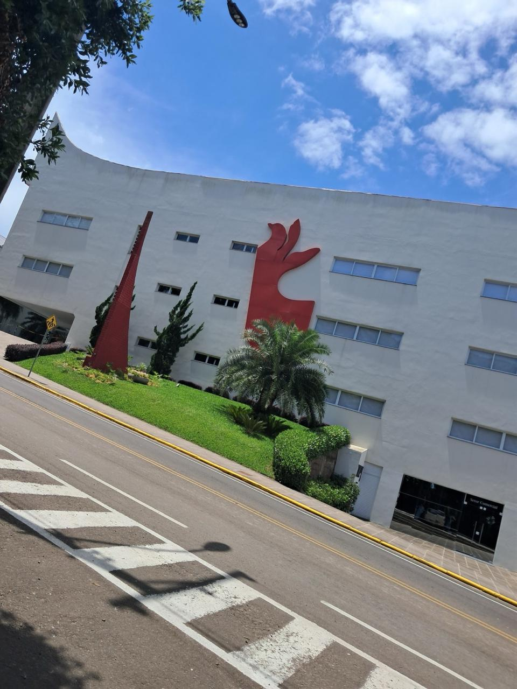
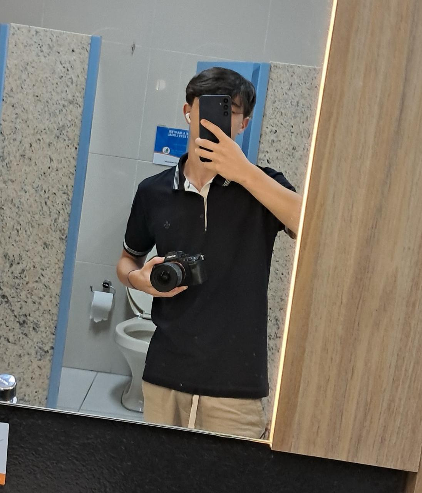
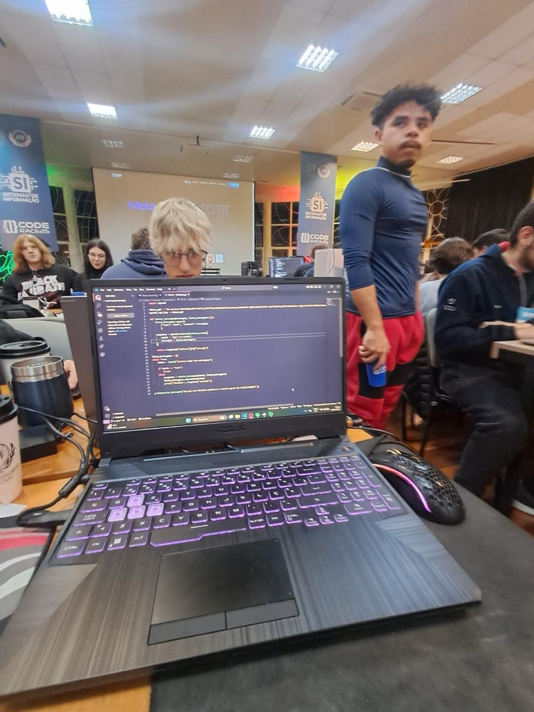
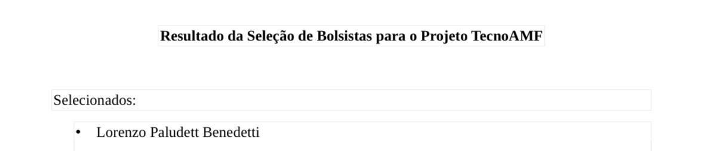
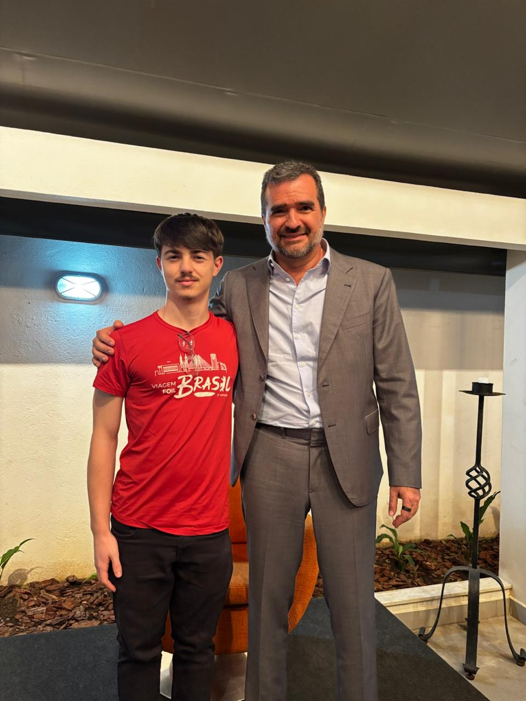

Minha Jornada
Uma trajetória do ser
Lorenzo Paludett Benedetti
Cada etapa desta linha do tempo representa uma parte da minha transformação na AMF com o auxílio da metodologia FOIL — do primeiro contato até quem sou hoje.
Março 2025 — Abril 2026
Da descoberta ao protagonismo — registros de uma jornada que ainda está sendo escrita.





Continua...
"O homem é artífice positivo da própria vida e como consequência de bem-estar, qualidade de vida e evolução do contexto em que atua."
Lorenzo Paludett Benedetti